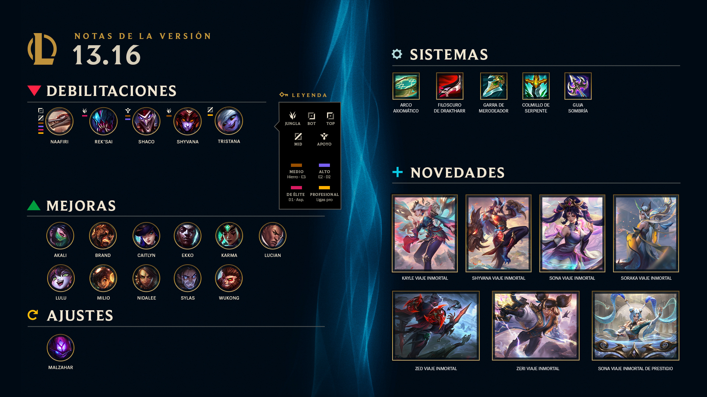
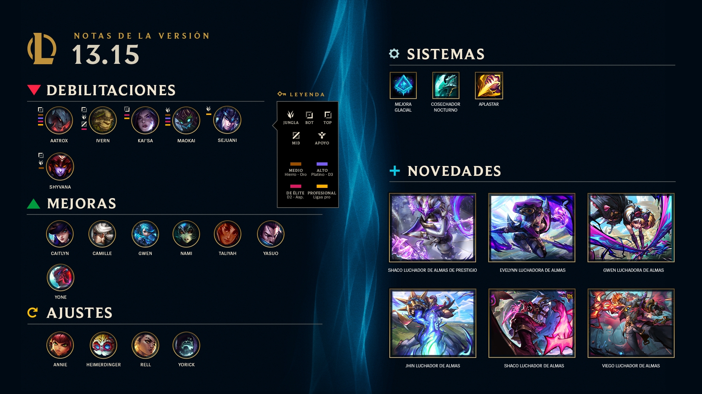
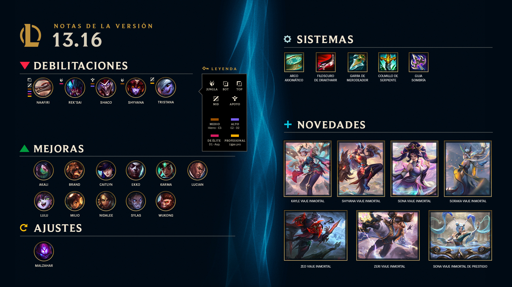
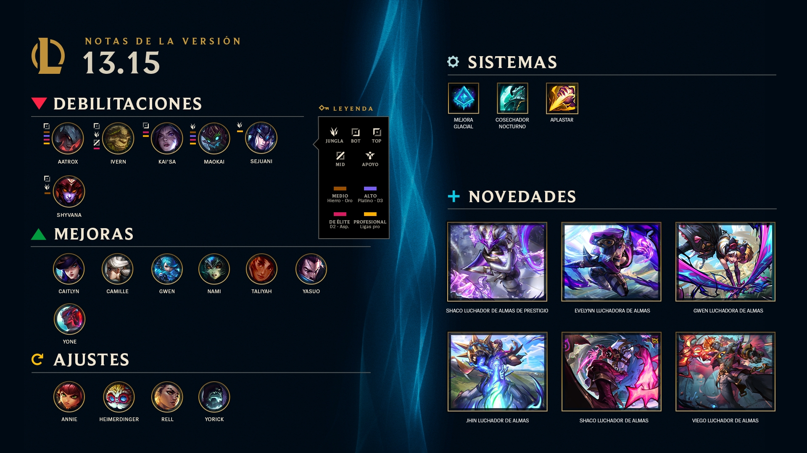

Parches
Aca podras encontrar informacion de los proximos parches, y parches anteriores por si buscas algo en especifico
Parche 13.16 16/08
Parche 13.15 02/08
Parche 13.14 19/07

Aca podras encontrar informacion de los proximos parches, y parches anteriores por si buscas algo en especifico
Parche 13.16 16/08
Parche 13.15 02/08
Parche 13.14 19/07